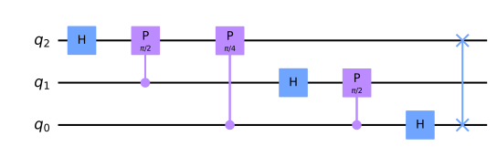
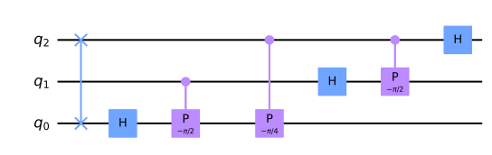

QuantumCircuit
- class QuantumCircuit
A class to build a Quantum Circuit and write it to a file for the QSFW. When the various methods of this class are called, the code for the qsfw is generated and cached in the object so that it can finally be written to the interface file.
- __init__(initial_qubits: tuple[int], comment: str = None)
Creates a circuit by executing the circuit command for the given initial qubits.
Raises a ValueError exception if the initial qubits are empty or they include a non-Bit value.
- Parameters:
initial_qubits (tuple[int]) – A tuple containing the initial qubits. The index of the qubit inside the tuple determines the qubit ID e.g., initial_qubits[2] has qubit ID ‘q2’.
comment (str) – (optional) Adds the given comment before the circuit command.
- write(file: TextIO = None)
Writes the circuit buffer to the given file. Clears the output buffer afterwards.
Raises an IOError exception if the given file is not writeable.
- Parameters:
file (TextIO) – (optional) The file where to write the circuit buffer. Defaults to stdout, if no file is given.
- class Base
- comment(cmt: str, multiline: bool = False)
Appends the given comment cmt with the prefix ‘// ‘ to the output buffer.
- Parameters:
cmt (str) – The comment to be appended.
multiline (bool) – (optional) If set to False, the comment gets ‘// ‘ as a prefix. If set to True, the comment gets ‘/* ‘ as a prefix and ‘ */’ as a subfix. Defaults to False.
- empty_line(count: int = 1)
Appends empty line(s) to the output buffer.
Raises a ValueError exception if count is smaller than 1.
- Parameters:
count (int) – (optional) Determines the number of empty lines. Defaults to 1.
Gates
1-Qubit-Gates
- class __OneQubitGates
- hadamard(qubit: int)
Executes the hadamard command on the given qubit.
Raises a ValueError exception if the qubit is not part of the circuit.
- Parameters:
qubit (int) – The ID of the qubit.
- ident(qubit: int)
Executes the ident command on the given qubit.
Raises a ValueError exception if the qubit is not part of the circuit.
- Parameters:
qubit (int) – The ID of the qubit.
- measure(qubits: tuple[int] = ())
Executes the measure command for all given qubits.
Raises a ValueError exception if a qubit is not part of the circuit or if there are duplicates.
- Parameters:
qubits (tuple[int]) – (optional) The to-be-measured qubit IDs. If no qubits are given, defaults to all qubits of the circuit.
- pauliX(qubit: int)
Executes the pauliX command on the given qubit.
Raises a ValueError exception if the qubit is not part of the circuit.
- Parameters:
qubit (int) – The ID of the qubit.
- pauliY(qubit: int)
Executes the pauliY command on the given qubit.
Raises a ValueError exception if the qubit is not part of the circuit.
- Parameters:
qubit (int) – The ID of the qubit.
- pauliZ(qubit: int)
Executes the pauliZ command on the given qubit.
Raises a ValueError exception if the qubit is not part of the circuit.
- Parameters:
qubit (int) – The ID of the qubit.
- phase(qubit: int, angle: str)
Executes the phase command on the given qubit.
Raises a ValueError exception if the qubit is not part of the circuit.
- Parameters:
qubit (int) – The ID of the qubit.
angle (str) – The angle for the shift. Use str so that expressions like ‘pi / 2’ don’t get evaluated here but in the QSFW.
- sphase(qubit: int)
Executes the sphase command on the given qubit.
Raises a ValueError exception if the qubit is not part of the circuit.
- Parameters:
qubit (int) – The ID of the qubit.
- tphase(qubit: int)
Executes the tphase command on the given qubit.
Raises a ValueError exception if the qubit is not part of the circuit.
- Parameters:
qubit (int) – The ID of the qubit.
2-Qubit-Gates
- class __TwoQubitGates
- cnot(qubit: int, cqubit: int)
Executes the cnot command on the given qubits.
Raises a ValueError exception if one of the qubits is not part of the circuit.
- Parameters:
qubit (int) – The ID of the qubit.
cqubit (int) – The ID of the control qubit.
- cphase(qubit: int, cqubit: int, angle: str)
Executes the cphase command on the given qubits.
Raises a ValueError exception if one of the qubits is not part of the circuit.
- Parameters:
qubit (int) – The ID of the qubit.
cqubit (int) – The ID of the control qubit.
angle (str) – The angle for the shift. Use str so that expressions like ‘pi / 2’ don’t get evaluated here.
- cz(qubit: int, cqubit: int)
Executes the cz (Controlled-Z) command on the given qubits.
Raises a ValueError exception if one of the qubits is not part of the circuit.
- Parameters:
qubit (int) – The ID of the qubit.
cqubit (int) – The ID of the control qubit.
- swap(qubit0: int, qubit1: int)
Executes the swap command on the given qubits.
Raises a ValueError exception if one of the qubits is not part of the circuit.
- Parameters:
qubit0 (int) – The ID of the first qubit.
qubit1 (int) – The ID of the second qubit.
3-Qubit-Gates
- class __ThreeQubitGates
- cswap(qubit0: int, qubit1: int, qubit2: int)
Executes the cswap command on the given qubits.
Raises a ValueError exception if one of the qubits is not part of the circuit.
- Parameters:
qubit0 (int) – The ID of the first qubit.
qubit1 (int) – The ID of the second qubit.
qubit2 (int) – The ID of the third qubit.
- toffoli(qubit0: int, qubit1: int, qubit2: int)
Executes the toffoli command on the given qubits.
Raises a ValueError exception if one of the qubits is not part of the circuit.
- Parameters:
qubit0 (int) – The ID of the first qubit.
qubit1 (int) – The ID of the second qubit.
qubit2 (int) – The ID of the third qubit.
Algorithms
- class Algorithms
- qft(qubits: tuple[int] = (), inverse: bool = False)
Builds the Quantum Fourier Transform for the given qubits.
Raises a ValueError exception if a qubit is not part of the circuit or if there are duplicates.
- Parameters:
qubits (tuple[int]) – (optional) A tuple containing the IDs of the qubits. If no qubits are given, defaults to all qubits of the circuit.
inverse (bool) – (optional) If set to True, the inverse QFT will be built. Defaults to False.
Note
The following pictures show how the QFT is applied on the given Qubits.qft((0, 1, 2), inverse=False)qft((0, 1, 2), inverse=True)